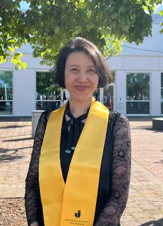

AI Engineer & Researcher | Interpretable ML · Materials Informatics · Evolutionary Computation
I hold an MSc in AI Engineering from Jönköping University, where my thesis applied symbolic regression and grammatical evolution to discover interpretable, physics-informed models for predicting mechanical properties of aluminium alloys. A journal manuscript based on this work is currently in progress.
Before transitioning to AI, I spent 16 years in the CNC machine-tool industry in Shanghai, managing technical support operations and cross-functional teams. That background gives me a practical understanding of industrial processes and the value of models that domain experts can inspect and trust.
I am seeking research-oriented roles in AI and machine learning. My interests include explainable AI, symbolic regression, nature-inspired computing and optimization, and their application to scientific and engineering domains.
Contact Me